Lian Yong Wei
Murió en el Commonwealth Health Care Corporation, un hospital de Saipán, en las Islas Marianas del Norte mientras estaba bajo la custodia de ICE. La agencia anunció su muerte nueve días después y hasta hoy no ha explicado las causas.
Murió en el Commonwealth Health Care Corporation, un hospital de Saipán, en las Islas Marianas del Norte mientras estaba bajo la custodia de ICE. La agencia anunció su muerte nueve días después y hasta hoy no ha explicado las causas.
Murió en el centro de detención Delaney Hall en Newark, Nueva Jersey. ICE anunció su fallecimiento dos días después y la causa sigue irresuelta.
La leucemia acabó con su vida en un hospital de Augusta, Georgia. De acuerdo con Enlace Latino NC, antes de caer bajo custodia de IC, vivía en Durham, Carolina del Norte.
Murió en el camino durante un traslado entre el Irwin County Detention Center, en Ocilla, y el centro de procesamiento D. Ray de Folkston, ambos en Georgia. Se sospecha paro cardíaco.
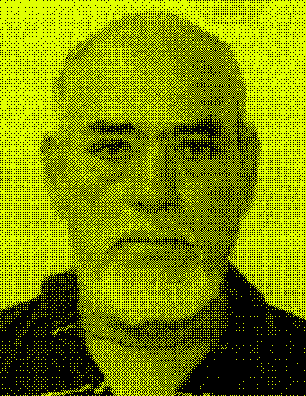
Murió en el Webb County Detention Center, en Laredo, Texas. ICE informó que fue hallado inconsciente y murió por causas naturales, pero sigue en duda.
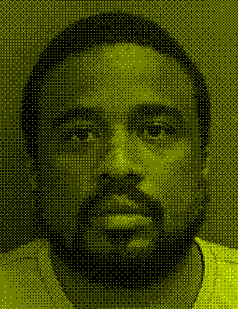
Murió en el Winn Correctional Center, en Luisiana. ICE reportó su muerte tres días después sin detalles claros sobre la causa.
Murió en un centro de detención en Lumpkin, Georgia. ICE habló de un presunto suicidio. Según la agencia, había sido arrestado por violencia doméstica.
Murió en el Federal Detention Center de Miami, Florida. Las autoridades presumen un suicidio, aún bajo investigación.
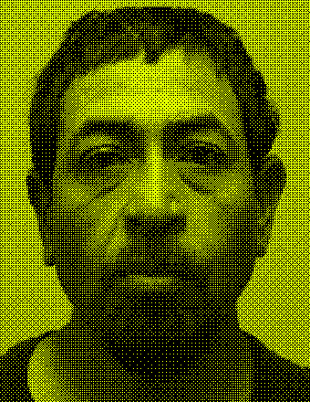
Vivía en Chattanooga, Tennessee, según el canal WTVC. Murió en el Winn Correctional Center, en Winnfield, Luisiana, donde lo hallaron inconsciente. Hasta ahora no se ha precisado qué causó su muerte.
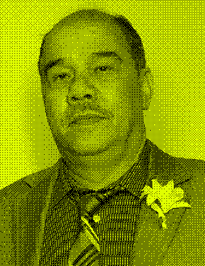
Fue encontrado sin respuesta en el Miami Correctional Facility, en Bunker Hill, Indiana, donde murió. ICE informó tres días después y no ha especificado la causa.
Vivía en Los Ángeles, según The Guardian. Lo hallaron sin respuesta en su litera, en el centro de detención de Adelanto, California. José padecía diabetes, hipertensión e hiperlipidemia, pero se desconoce de qué murió.

Originario de San Juan Chamula, una comunidad maya tzotzil de las montañas de Chiapas. Fue arrestado en enero de 2026 por la policía local en Florida. ICE lo puso bajo su custodia el 21 de febrero. Los cargos en su contra son motivo de discrepancia y se asociaron con fraude. El 26 de febrero lo trasladaron al Glades County Detention Center. A las 2:34 de la madrugada del 16 de marzo, un guardia lo encontró inconsciente. ICE alega un presunto suicidio. Su padre, Manuel Perez Ruiz, habló con él tres días antes y lo escuchó bien. Para repatriar su cuerpo tuvieron que pedir ayuda económica. El 4 de abril fue sepultado en Chiapas, entre decenas de personas, mientras su madre lloraba sobre el ataúd.
Mohammad era padre de seis hijos; el menor tenía apenas 18 meses. Durante más de diez años combatió junto a las fuerzas especiales del Ejército de EE. UU. en Afganistán. En 2021, Estados Unidos lo evacuó con su familia. Trabajaba en una panadería en Richardson, Texas, para sostener a los suyos mientras esperaba una respuesta a su solicitud de asilo. El 13 de marzo, hacia las 7 de la mañana, agentes de ICE lo detuvieron afuera de su casa, justo cuando iba a llevar a sus hijos a la escuela. ICE justificó el arresto con acusaciones por fraude de beneficios alimentarios y robo, aunque tenía condena. Esa noche sintió dolor en el pecho y falta de aire, y lo llevaron al Parkland Hospital de Dallas. Murió a la mañana siguiente, tras hinchársele la lengua mientras desayunaba. “Sus hijos siguen preguntando cuándo volverá su papá”, dijo su familia.
Su hermano, Presly Nelson, lo recuerda como un hombre tranquilo y compasivo que amaba a su familia, las fiestas y la música haitiana. Emmanuel vivía en Dorchester, Massachusetts, y había llegado a EE. UU. dos años antes mediante un programa humanitario. ICE lo detuvo en Boston en septiembre de 2025, tras un arresto de la policía local por agresión; su hermano insiste en que no era un criminal. Lo enviaron al Florence Correctional Center, en Arizona, donde siguió preso incluso después de que le negaran el asilo. A mediados de febrero dijo que le dolía una muela. De acuerdo con su familia nunca lo llevaron al dentista. La infección empeoró y terminó en cuidados intensivos. Su familia no pudo verlo hasta sus últimos días. ICE ha disputado parte de este relato, y legisladores calificaron el caso de “altamente prevenible”.
Tenía varias enfermedades crónicas y fue hospitalizado desde el 20 de febrero en el Merit Health Hospital de Natchez, Misisipi. Ese mismo día se reportó estable, aunque horas después murió por un paro cardíaco.
Vivía en el barrio de Westlake, en Los Ángeles, y padecía diabetes y colesterol alto. Llegó al Victor Valley Global Medical Center, en California, con dolor en el pecho y falta de aire. Murió allí. La concejal Eunisses Hernandez sostiene que se le negó atención médica mientras estaba bajo custodia de ICE.
Pasó más de trece meses bajo custodia de ICE, desde el 21 de enero de 2025. Murió en el Larkin Community Hospital, en Miami. Según ICE, tenía un historial de problemas de salud graves y “colapsó inesperadamente”. Pasó por un centro de salud conductual y fue hospitalizado el 26 de enero.
Encontrado sin respuesta en su celda del Miami Correctional Facility, en Bunker Hill, Indiana. ICE informó de su muerte dos días después sin precisar la causa.
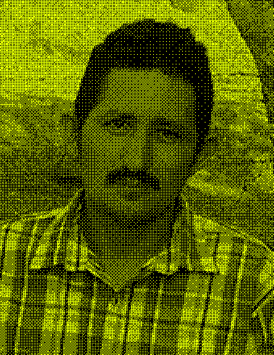
Murió a los 34 años en el Robert A. Deyton Detention Facility, en Lovejoy, Georgia, donde fue hallado ahorcado en su celda. El Consulado General de México en Atlanta también reportó el caso.
Víctor trabajaba en un restaurante coreano en el área de Minneapolis, y ICE lo detuvo en Coon Rapids, Minnesota, a principios de enero. Tenía una orden final de deportación y llevaba ocho días en Camp East Montana, en El Paso, Texas, cuando lo hallaron sin respuesta en su cuarto. ICE habló de un presunto suicidio, que su familia rechaza. Sus familiares hablaron con él el 9 de enero y no lo notaron deprimido; incluso pensaban que pronto lo devolverían a casa. Quienes lo conocían lo recuerdan como un hombre que amaba el básquetbol y el béisbol. Para repatriar sus restos, la familia organizó una colecta.
Parady nació en un campo de refugiados en Tailandia y llegó a Filadelfia a los 2 años, en 1982, con su familia, que huía del genocidio camboyano. Creció en esa ciudad y llevaba 44 años en Estados Unidos. Era padre de Jazmine y parte de una familia grande en Upper Darby, Pensilvania. Sus allegados lo describen como aventurero, un padre entregado y, para sus sobrinos, una figura paterna. El 6 de enero salió de casa para comprar comida y fue detenido por ICE. Lo llevaron al Federal Detention Center de Filadelfia, donde, según su familia, vomitaba, pedía ayuda y suplicaba agua. Lo hallaron sin respuesta y lo hospitalizaron en el Thomas Jefferson University Hospital, donde murió tres días después de su arresto, tras un paro cardíaco, una lesión cerebral por falta de oxígeno y falla de varios órganos. ICE atribuyó el cuadro a abstinencia de drogas.
Era padre de familia. Estaba en el Imperial Regional Detention Facility, en Calexico, California, cuando lo llevaron con dolor en el pecho, al John F. Kennedy Memorial Hospital, en Indio, donde murió. Sus parientes han pedido una investigación sobre lo ocurrido.
Murió en un hospital de Conroe, Texas, de insuficiencia cardíaca congestiva. ICE informó que había ingresado por problemas crónicos del corazón. No hay datos públicos sobre su arresto ni sobre su familia.
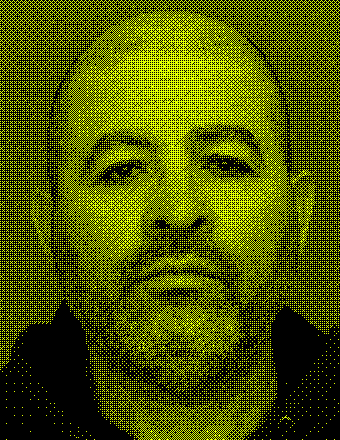
Geraldo llegó a Estados Unidos en 1996 y vivió más de veinte años en Rochester, Nueva York, donde crió a sus cuatro hijos. ICE lo arrestó el 14 de julio de 2025 en una operación planificada y desde septiembre estaba en Camp East Montana, en El Paso, Texas. Vivía con enfermedades mentales. Según reportes de prensa, llegó a golpearse la cabeza contra una pared por no poder pagar las llamadas para hablar con sus hijos. El 3 de enero de 2026 murió allí. Testigos relataron que lo oyeron decir “no puedo respirar” mientras lo sujetaban los guardias. ICE sostuvo que intentó quitarse la vida, pero el médico forense de El Paso dictaminó homicidio por asfixia por la compresión del cuello y el torso. Las autoridades lo describieron como delincuente sexual registrado, algo que su hija rechaza: ella lo recuerda como un buen padre.
Carlos era padre de cuatro hijos, trabajaba como conductor de un servicio de transporte y vivía con diabetes tipo 1. ICE lo detuvo en enero de 2026 en Michigan tras un arresto por agresión. Según su hermana, Franciny, pidió fianza y la deportación voluntaria, pero se las negaron. Tras ser trasladado al Winn Correctional Center, en Luisiana, dijo que tenía dolor en el pecho, que casi no le daban de comer ni beber y que nadie le revisaba el azúcar. Un vecino de celda contó que recibía insulina de forma irregular. Horas antes de morir, su novia, Ana Leon Castro, dijo que él la llamó para decirle que las pastillas no ayudaban: “Lo único que le dieron fue una pastilla”. Murió el 18 de septiembre en el Winn Parish Medical Center. ICE sostiene que “recibió atención médica adecuada”, y la causa de muerte sigue pendiente.
Lo encontraron sin respuesta en su celda del North Lake Processing Center, en Baldwin, Michigan, después de meses de quejas por el deterioro de su salud. No hay información pública sobre cómo fue detenido ni sobre su familia.
El 4 de diciembre lo encontraron sin pulso en el Adams County Correctional Center, en Misisipi. Lo llevaron al hospital Merit Health Natchez, donde confirmaron que no tenía actividad cerebral y su familia accedió a que le retiraran el soporte vital. Falleció diez días después.
Según medios era líder religioso en su comunidad. Murió en el Moshannon Valley Processing Center, en Pensilvania, tras quejarse de dolor en el pecho. Días antes había denunciado ante un tribunal que no recibía atención médica adecuada.
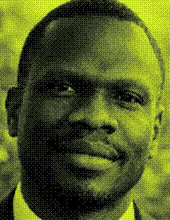
Murió tras una emergencia médica en el centro Delaney Hall, en Newark, Nueva Jersey. ICE sospecha causas naturales.
Murió en un hospital de Fort Worth, Texas, tras pasar por el Prairieland Detention Center. Según ICE, falleció de insuficiencia cardíaca vinculada a problemas respiratorios, hepáticos y renales crónicos.
Pasó buena parte de 2025 hospitalizado por complicaciones de neumonía, hipoxia y falta de aire. Murió a los 72 años en el Valley Baptist Medical Center, en Harlingen, Texas. No hay detalles públicos de su arresto.
Fue la primera persona en morir en Camp East Montana, en El Paso, Texas, en un hospital de esa ciudad. ICE habló de causas naturales y una autopsia indicó complicaciones de una enfermedad del hígado. Su viuda disputa esa versión. Según The Guardian, la deportaron antes de que pudiera volver a ver a su esposo.
Murió en un hospital de San Antonio, Texas, tras estar en el South Texas ICE Processing Center. La causa fue insuficiencia cardíaca y una posible neumonía, que ICE relacionó con complicaciones de una cirugía del corazón.
Sufrió un paro cardíaco que ICE atribuyó a abstinencia de alcohol. Murió en un hospital de Victorville, California, tras estar en el centro de Adelanto.
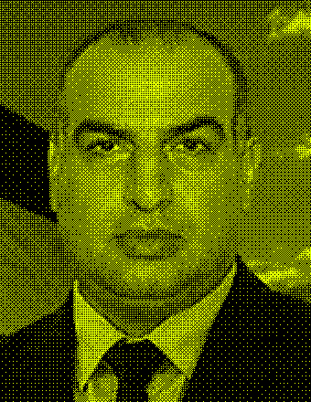
Lo hospitalizaron en el Larkin Community Hospital, en Miami, con fiebre alta. Perdió la consciencia y murió de un paro cardíaco. Antes había estado en el centro Krome.
Murió en la cárcel del condado de Ste. Genevieve, Misuri. Según los reportes, se ahorcó. Fue la segunda muerte de un detenido de ICE en un centro de Misuri en poco tiempo.
También conocido como Miguel Ángel García Medina. Estaba bajo custodia de ICE en Dallas, Texas, al recibir un disparo de francotirador, el 24 de septiembre, durante el ataque a la oficina de ICE de esa ciudad. Murió cinco días después, a los 31 años.
Sufrió lo que ICE describió como una convulsión en el Imperial Regional Detention Facility, en Calexico, California. Murió en un hospital cercano a San Diego.
Estaba bajo custodia de ICE en Dallas, Texas, y murió tras recibir un disparo de francotirador durante el ataque a la oficina de ICE de esa ciudad.
Ismael llegó a Estados Unidos a los cuatro años y creció en el condado de Orange, California. Fue beneficiario de DACA entre 2012 y 2016, hasta que le negaron la renovación tras una condena por conducir ebrio. Llevaba unos quince años trabajando en un autolavado en Huntington Beach, y sus clientes lo apreciaban. El 17 de agosto de 2025, agentes de ICE lo arrestaron durante una operación en su lugar de trabajo y lo enviaron al centro de Adelanto. Dos semanas después empezó a sentir tos, fiebre y un dolor intenso por un absceso. Según su familia, no le dieron atención a tiempo. Ismael murió en el Victor Valley Global Medical Center, en Victorville, de un infarto, mientras esperaba una cirugía. Para pagar su funeral, su familia vendió tamales, carnitas y pozole. Sus padres demandaron por negligencia médica y muerte injusta.
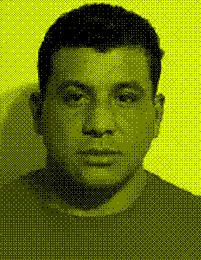
Murió de insuficiencia hepática en el Nassau County Correctional Center, en East Meadow, Nueva York, con menos de 18 horas de detención. Su familia presentó una demanda contra el gobierno.
Padecía Alzheimer avanzado, cáncer de riñón y hepatitis C. Murió en un hospital de Mesa, Arizona, tras estar en el Eloy Detention Center.
Murió en un hospital de Florence, Arizona. ICE sospecha complicaciones pulmonares. No encontré información pública sobre su arresto.
Llevaba sólo cinco días bajo custodia cuando lo encontraron ahorcado en una regadera del Moshannon Valley Processing Center, en Pensilvania. El forense dictaminó suicidio, aunque tenía manos y pies atados. La investigación sigue abierta.
Lo hospitalizaron un día antes de morir en Karnes City, Texas, por convulsiones, vómitos y falta de respuesta. Había estado en el centro de procesamiento de ese condado.
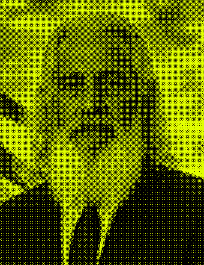
Se quejó de dolor en el pecho en el centro Krome, en Miami. Al principio respondió a la reanimación, pero murió después en el hospital.
Lo encontraron sin respuesta en el Federal Detention Center de Miami. Le practicaron reanimación y descargas de desfibrilador, pero murió allí.
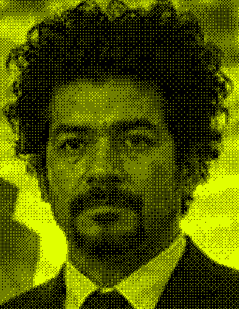
Lo hallaron sin respuesta, con una tela atada al cuello y a la litera superior, y murió en un hospital de Americus, Georgia. La investigación continúa.
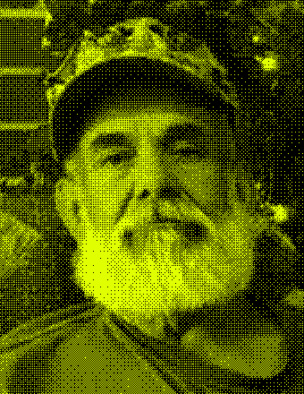
Murió durante el traslado de la cárcel del condado de Lowndes, en Valdosta, Georgia, rumbo al Stewart Detention Center. Quedó sin respuesta en el trayecto.
Murió tras 32 días de detención en el Broward Transitional Center, en Pompano Beach, Florida, debido a una falla cardiovascular por hipertensión. Los registros muestran que su presión arterial y su función renal fueron motivo de alerta en repetidas revisiones.
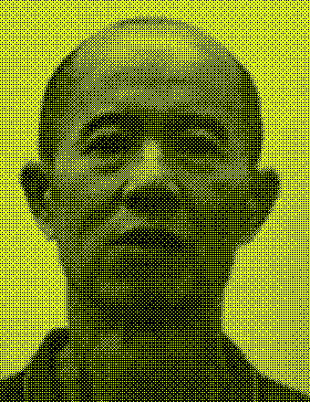
Tenía demencia, agitación y una úlcera por presión. Necesitaba ayuda total para sus actividades diarias. Pasó sus últimos días en cuidados paliativos en un hospital de El Paso, Texas.
Lo encontraron sin respuesta en su celda de la cárcel del condado de Phelps, en Rolla, Misuri, con una manta alrededor del cuello. Tenía antecedentes de soplo cardíaco y ansiedad. En la sala de emergencias dio positivo a tuberculosis y COVID.
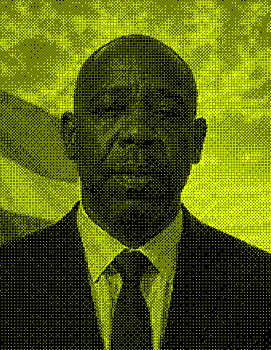
Murió en el Centro Médico de San Juan, Puerto Rico, tras ser diagnosticado con un pulmón colapsado. ICE vinculó el caso con una interdicción de narcotráfico y contrabando de personas. La toxicología reveló una cantidad extremadamente alta de cocaína en su sangre.
Murió de un derrame cerebral en un hospital de Miami, después de pasar por el centro Krome.
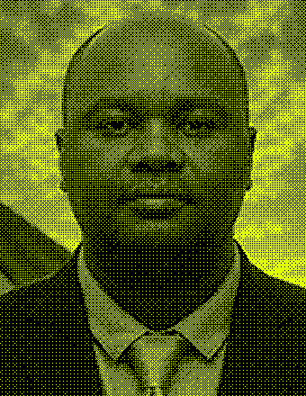
Los médicos del Banner University Medical Center, en Phoenix, le encontraron neumonía, un posible linfoma, sepsis, tuberculosis y accidente cerebrovascular. Sus familiares tuvieron que decidir retirarle el soporte vital. Antes había estado en el Eloy Detention Center.
Lo trataron por un trastorno catatónico y por rabdomiólisis, y lo trasladaron a atención psiquiátrica antes de devolverlo al hospital Larkin Community, en Hialeah, Florida, donde murió. Miami New Times lo vincula con complicaciones de un trastorno esquizoafectivo.